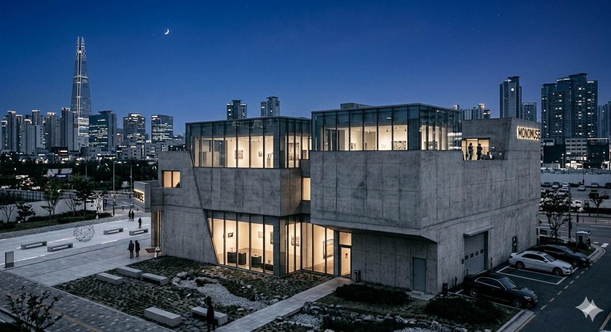

Mission Statement
MonoMuse exists to push the boundaries of what a museum can be. We are dedicated to showcasing the ways technology reshapes artistic expression — from generative algorithms to immersive digital environments. Our mission is simple: make the future of art accessible to everyone.
Milestones
2023
Opened our newly expanded east wing, welcoming artists from over 20 countries for our first international collaboration series.
2018
Launched the MonoMuse Digital Lab, a hands-on space where visitors can experiment with creative coding and generative art tools.
2016
Founded in Pittsburgh, PA, MonoMuse opened its doors with "Signal & Noise," an exhibition exploring the relationship between data and human emotion.